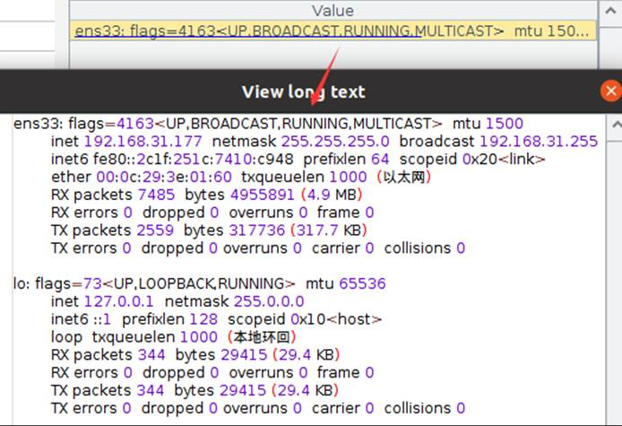

Description:
It is used to call the system command, and return the result once completed.
Syntax:
system(cmd)
Note:
Invoke and execute system commands such as cmd, sh and powershell.
The function can only execute one command at a time for the time being; to execute multiple commands, write the commands to an executable file such as bat or sh and then invoke the file through a command.
Parameter:
|
cmd |
A system command, whose type can be cmd, sh or powershell; Its format is fixed, which is “cmd /c + command, “powershell -c + command” or “sh -c + command”. |
Option:
|
@p |
Proceed with the execution without pause. |
|
@o |
Return the result of stdout. |
|
@a |
Return the sequence of [exit,stdout,stderr]. |
Return value:
The corresponding result
Example:
|
system("cmd /c ipconfig") |
Get network information of the current machine. |
|
system("cmd /c D:\\MicroInsight\\esCalc\\bin\\startup-zh.bat") |
Execute startup-zh.bat. |
|
system("cmd /c D:\\MicroInsight\\DataLogic\\bin\\DataLogic.exe") |
Execute DataLogic.exe. |
|
system("sh -c /test.sh") |
Execute test.sh. |
|
system("powershell -c copy D:\\stu.txt D:\\file\\stu.txt") |
Copy stu.txt in D: to D:\\file directory. |
When @o option is present:
|
system@o("sh -c ifconfig") |
Use @o option to return the result of stdout:  |
When @a option is present:
|
system@a("powershell /c Remove-Item D:\\test.txt") |
With @a option, return a sequence in the order of [exit,stdout,stderr]; below is the interface when error is reported during command execution:
|
|
system@a("powershell /c New-Item E:\\t1.txt") |
When @a option is present and the command is correctly executed:
|